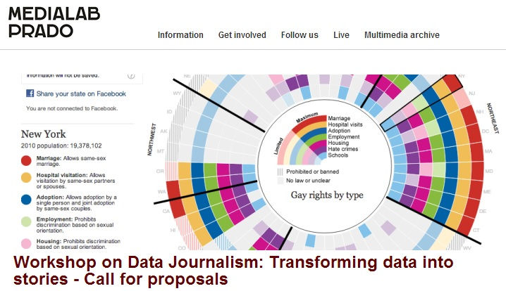
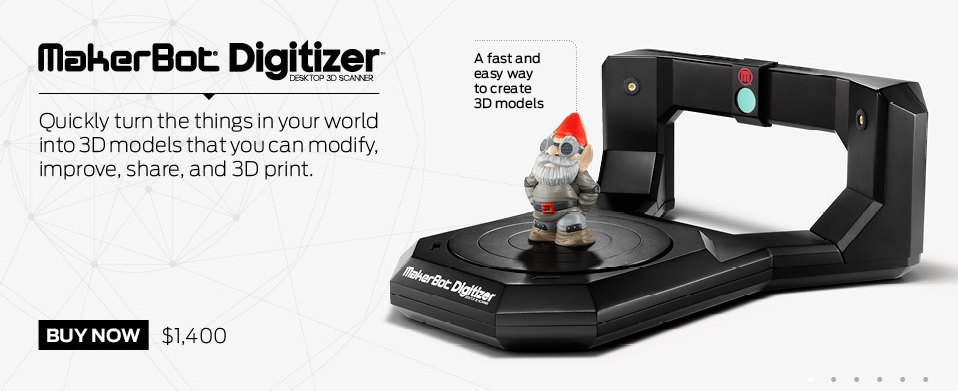

2014-12-02

Medialab Prodo於2006年開始，是馬德里市議會推 行藝術、體育、旅遊推展計畫的一部分，納入公民生產、研究、傳播的可能，目的在提供一個開放研究及產品生產的平台，透過漸次邀請各方專業人士加入，允許使 用的用戶進行自由配置、修改和生產的工作，促進集體創作，因此，不論自身專業背景為何，都可以透過這個網站使自己的創造及科技使用能夠有效的被運 用，Media Prodo計畫相信藉由不同領域的人交流對話後，各類型的協同創造將獲得爆炸性的收穫。
而為能持續獲得不斷注入的新能量，Media Prodo透過多樣的參與形式（包括有國際研討會的舉行、成立各類型之工作組合、辦理講座及辯論活動、展覽或其他活動，作為媒合各專業技能及知識生產的契機。

Reprap機器是一台可快速打印的3D列印機器原型，Media Prodo其中一支擁有九位成員的工作組合以這台機器出發，合力創建完成MakerBot，成為一例藉由互動設計生產出低成本的3D印表機，2009年Media Prodo啟動了一場研討會，正式使用這台3D列印機器，也作為組織地方社區的力量，使協同創造的生產能繼續推進，宣示未來也將開啟更多協力創作的新工作組合。
Media Prodo至今已舉辦超過15場國際研討會，提供多功能的空間以做思考，期待衍生出進一步的研究及深入可能，累計參加人數超過900人，並且發展出140餘件的原型協作，目前網站中正在進行的工作組合有DigitalFacade、AVLAB、Commons Lab、Inclusiva-net、Visualizar、Interactivos分別進行音樂協作、環境討論、理論研究等工作。
AVLAB會議固定每月聚會，以實驗性的方式讓各 方技術可以結合，成員為以電子和電聲音樂，聲音藝術，互動裝置音頻和視頻處理領域為專業的人，每次會議會邀請三個左右的音樂家的DJ、VJ們或邀請其他人 提供了一個簡短的概念和技術介紹自己的工作，而與會者也有機會看到每個藝術家所使用的手段和工具，在這樣相互激盪的過程中，最後會產生了一個想法以提供一 個共享的創建過程
Media Prodo網站中所分享的著作權均使用創用CC條款-「姓名標示─相同方式分享」，除非作者另有其他釋出條件，則可由作者自行規定。
國外有Media Prodo這麼樣一個由政府領頭，結合社區力量，推動協同創造的計畫，未來，或許有更多的國家會在國家發展中特別強調社區協同創造的重要吧！
參考資料：
http://opendesignnow.org/index.php/case/medialab-prado-laura-fernandez/#fnref-455-1
http://medialab-prado.es/
http://makerbot.com/